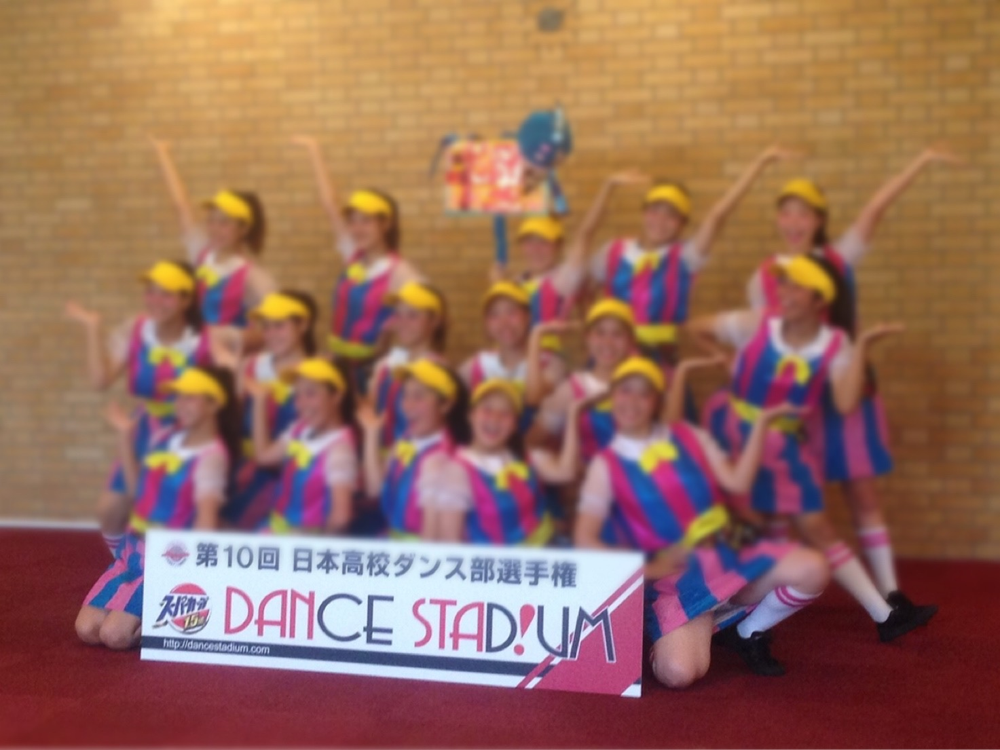

ルーレットをテーマにした作品。今までで一番大きな大会で、広い範囲からレベルの高い学校が沢山集まる。
入学してきた1年生に部活紹介を行うための校内ライブであり、これがラスト校内ライブ。
地域のイベントに参加。新歓ライブで披露したジャンルダンスを披露。
7月に行われるDANCE STADIUMという大きな大会の全国大会出場に向けて夏合宿を行う。
アイスクリーム屋さんをテーマにした作品を披露。
文化祭では、DANCE STADIUMで披露した作品や、ジャンルの作品、軽音部とのコラボダンスや後夜祭でのコピーダンスなど沢山のダンスを披露。
今年の代から初めて挑戦する大きな大会。桃太郎をモチーフにしたストーリー性のあるダンスを披露。ノベルティ部門（物語部門）で３位入賞。
ダンス部生活最後の大きな大会。パパラッチをテーマに衣装や小道具も凝ったダンスを披露。コスチューム賞を受賞。
仮引退イベントであり、後輩と最初で最後の作品。約45名で、バスケ選手とチアガールをテーマにダンスを披露。
トップに戻る
初めの画面に戻る